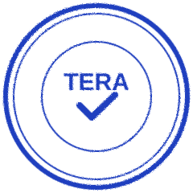

Website yang berfungsi seperti cap tera: tanda bahwa usaha Anda bisa dipercaya.
Di pasar, timbangan yang sudah ditera membuat pembeli tenang. Kami ingin website punya peran yang sama untuk usaha lokal.
Usaha lokal layak tampil sebaik perusahaan besar.
Sejak 2010 kami membuat website untuk berbagai usaha. Polanya berulang: usaha yang bagus dirugikan oleh website yang mahal, lambat, atau rumit dirawat.
Ada yang terjebak biaya perpanjangan tahunan. Ada yang tidak bisa memindahkan websitenya sendiri. TeraWeb kami rancang sebagai kebalikannya: sederhana, cepat, harga terang, dan semua file diserahkan kepada Anda.
Kenapa namanya Tera?
Dalam bahasa Indonesia, tera adalah cap pengesahan pada alat ukur seperti timbangan dan meteran. Cap itu tidak mengubah barang yang ditimbang, tetapi membuat pembeli percaya pada takarannya.
Website yang rapi dan jelas bekerja dengan cara yang sama: ia tidak menggantikan kualitas usaha Anda, tetapi membuat orang yakin bahwa usaha itu nyata dan layak dipercaya. Itulah yang kami bangun.
Kenapa website kami statis?
Bayangkan dua rumah makan.
Website WordPress: memasak setelah dipesan
Setiap pengunjung datang, server menyusun halaman dulu dari database, tema, dan plugin. Saat ramai jadi lebih lambat, dan lebih banyak bagian yang harus diperbarui agar tetap aman.
Website statis TeraWeb: seperti nasi padang
Lauk sudah tertata di etalase. Begitu pelanggan datang, langsung tersaji. Cepat, sedikit bagian yang bisa rusak, dan hampir tanpa perawatan.
Konsekuensinya jujur kami sampaikan: tidak ada dashboard untuk mengedit sendiri. Kalau Anda ingin mengubah teks atau foto, kirim lewat WhatsApp dan kami yang mengerjakan.
Empat prinsip kerja kami.
Jelas di depan
Harga, isi paket, dan hal yang tidak termasuk kami tulis sebelum Anda memutuskan. Tidak ada biaya yang muncul belakangan.
Cepat dan ringan
Halaman kami dirancang supaya terbuka cepat di HP, karena sebagian besar pelanggan lokal mengecek lewat ponsel.
Milik Anda sepenuhnya
Website, file, dan nama domain adalah milik Anda. Anda bebas memindahkannya kapan pun.
Jujur soal hasil
Kami menjanjikan website yang rapi, meyakinkan, dan mudah dihubungi. Kami tidak menjanjikan peringkat 1 di Google, karena tidak ada yang bisa menjamin itu.

Mulai dari melihat contohnya.
Sebutkan jenis usaha Anda, kami kirim contoh website yang paling sesuai.